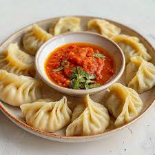

Chicken mo:mo is a popular Nepali dumpling that is enjoyed as a snack or a meal. It consists of minced chicken mixed with spices and wrapped in a thin dough, then steamed or fried. Here's a brief explanation, along with the ingredients and a recipe for preparing it at home:
Ingredients
For the dough:
- 2 cups all-purpose flour
- 1/2 cup water(adjust if needed)
- 1/2 tsp salt
For the filling:
- 500 grams minced chicken
- 1 medium onion, finely chopped
- 2-3 cloves garlic, minced
- 1-inch piece ginger, minced
- 2-3 green chilies, finely chopped (optional)
- 1/2 cup finely chopped fresh cilantro (coriander leaves)
- 1/2 cup finely chopped scallions (green onions)
- 1 tsp soy sauce
- 1 tsp sesame oil
- 1 tsp ground cumin
- 1/2 tsp ground turmeric
- Salt and pepper to taste
Recipe
Prepare the Dough:
- In a large mixing bowl, combine the flour and salt.
- Gradually add water and knead to form a smooth and elastic dough.
- Cover the dough with a damp cloth and let it rest for at least 30 minutes.
Assemble the Mo:Mo:
- Divide the dough into small, equal-sized balls.
- Roll each ball into a thin circle (about 3-4 inches in diameter) on a lightly floured surface.
- Place a spoonful of the chicken filling in the center of each circle.
- Fold the dough over the filling to form a half-moon shape or a pleated dumpling. Press the edges together to seal tightly.
Cook the Mo:Mo:
-
Steaming:
- Arrange the dumplings in a steamer basket, leaving space between each to prevent sticking.
- Steam for about 10-15 minutes, or until the dough is cooked and the filling is hot.
Serve:
- Serve hot with a dipping sauce made from soy sauce, vinegar, chili sauce, and a bit of sesame oil, or with a traditional Nepali tomato achar (chutney).
Enjoy your homemade chicken mo:mo!